Classic Monitor.
Vue d’ensemble
L'application Android classique moniteur affiche des informations à partir de votre contrôleur de charge classique. Votre régulateur de charge doit être connecté et configuré pour votre réseau local, veuillez référer à la documentation du contrôleur de charge classique fourni par Midnite solaire. Votre appareil Android doit également être connecté au même réseau local.
Avec la redirection de port et d'un service DDNS, le moniteur classique peut se connecter à votre contrôleur sur Internet en ajoutant une connexion en utilisant le nom de domaine fourni par votre service DDNS et le nombre de port publique configuré dans votre routeur. Un service DDNS gratuit est disponible à partir www.noip.com, votre routeur doit supporter le service DDNS que vous sélectionnez
Cette application supporte actuellement les modèles Classic & Classic Lite 150, 200, 250 contrôleurs de charge, la série Classic SL est pas pris en charge car elle ne dispose pas d'une connexion Ethernet, support de base pour les contrôleurs de charge MPPT TriStar est également inclus.
L'application affiche un ensemble des divers onglets en fonction de votre configuration.
Un ou plusieurs classiques sans WhizbangJr, les onglets sont:
Puissance | Energie | Température | Calendrier | Graphique Quotidien | Graphique Horaire | Informations | Messages | À propos
Un classique avec un seul WhizbangJr, les onglets sont:
L'état de charge | Chargez | Puissance | Energie | Capacité | Température | Calendrier | Graphique Quotidien | Graphique Horaire | Informations | Messages | À propos
Plus d'un classique avec une WhizbangJr, les onglets sont:
L'état de charge | Système | Puissance | Energie | Capacité | Température | Calendrier | Graphique Quotidien | Graphique Horaire | Informations | Messages | À propos
Un Morningstar Tri-Star MPPT, les onglets sont:
Puissance | Energie | À propos
Lorsque vous avez plus d'un contrôleur et un WhizbangJr, un bouton radio est affiché sur le calendrier et l'onglets d'énergie vous permettant de voir l'énergie récoltée par le contrôleur ou le système (somme de tous les contrôleurs).
Navigation
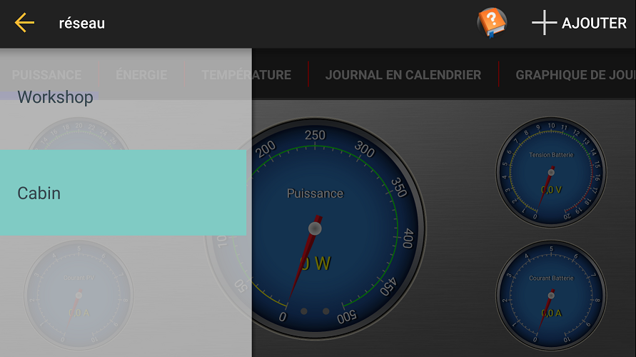L'écran de navigation est affiché en faisant glisser la partie gauche de la page vers la droite ou en appuyant sur l'icône 'hamburger' sur la bar d'action.
Chaque contrôleur configurée est affiché.
Vous pouvez enlever un contrôleur en faisant glisser l'entrée vers la droite.
Un icôn avec un point d'exclamation sera affiché à côté de l'entrée quand l'application ne peut pas communiquer avec le contrôleur.
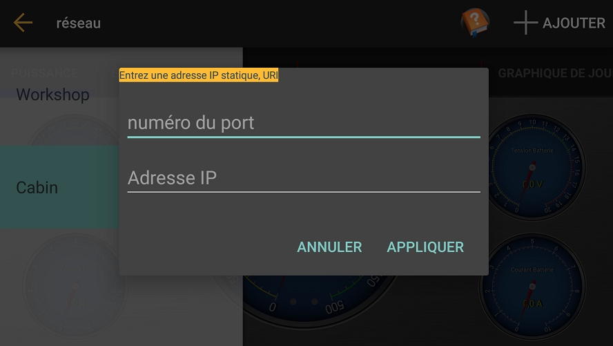
Vous pouvez configurée un contrôleur avec une address statique en appuyant sur le menu +Ajouter. Vous pouvez ainsi entrée le numero du port et le nom ou l'addresse IP du contrôleur.
Réglages
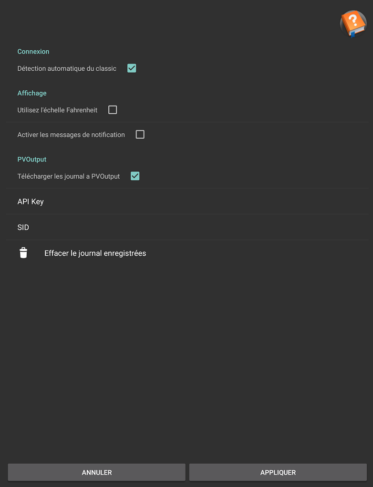La boîte de dialogue des réglages est affiché en appuyant sur l'icône d'engrenage en haut à droite de la barre d'action.
Détection automatique classique: L'application écoute pour des paquets UDP sur le réseau local pour un appareil classique disponible pas encore configuré lorsque cette option est sélectionnée. Lorsque la sélection est pas cochée, chaque classique doit être ajoutée manuellement en utilisant le bouton Ajouter+ lorsque le tiroir de navigation de gauche est affiché.
Utilisez échelle Fahrenheit: La température est affichée en fahrenheit sur des jauges, calendrier et graphiques autrement celcius.
Affiche de messages de notification: Les messages sont affichés au centre de l'écran à chaque fois que les changements d'état de charge, lorsque De-sélectionner aucun message s'affiche.
Vue Système Activé: Lorsqu'elle est cochée, l'application va se connecter à tous les contrôleurs de charge et de résumer les valeurs de puissance et de consommation, ce qui devrait être utilisé lorsque vous avez plus d'un contrôleur de charge de charge une banque de batterie. Si elle est décochée, chaque contrôleur de charge est indépendante, l'application ne se connecter au classique sélectionné.
PV Output

PVOutput: Lorsque vous activez PVOutput et fournissez une clé et systemId (SID), l'application télécharge l'énergie quotidienne (kWh) enregistré par vos classiques sur le site web PVoutput.org.
Le bouton Effacer le journal enregistrées réinitialise la dernière date de téléchargement, l'application va re-telecharger jusqu'à 30 jours de journaux quotidiens enregistrés
L'application télécharge les dernières lectures pour chaque jour depuis le dernier téléchargement jusqu'à 30 jours.
Vous aurez besoin d'obtenir un compte à PVOutput.org pour obtenir une clé et Sid.
Une icône 'soleil' s'affiche sur la barre d'action et vous suivez la navigation sur le site web PVOutput.org.
L'État de charge
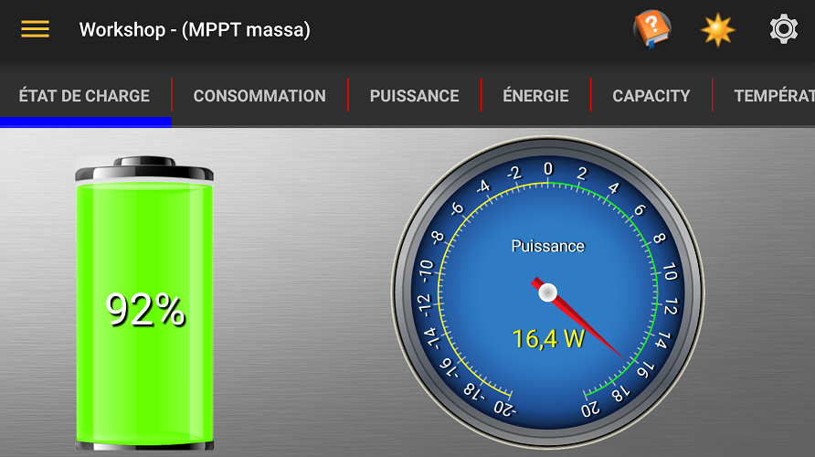L'onglet État de charge est affiché lorsque vous avez au moins un classique configuré avec un WhizbangJr.
Le cadrant bi-directionnel peut afficher le courant ou la puissance, appuyez sur le cadrant pour basculer entre la sélection. Une lecture négative indique que la batterie est déchargée, une lecture positive indique la charge.
Système
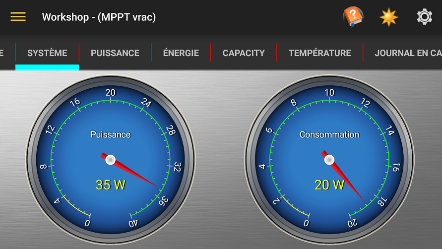L'onglet Système est affiché lorsque vous avez plus d'un contrôleur de charge et vous avez au moins un classique configuré avec un WhizbangJr.
Le cadrant de puissance affiche la quantité de puissance étant généré par le système (la somme de tous les contrôleurs).
Le cadrant de la consommation affiche la quantité d'énergie consommée par le système, cela est calculé à partir de la puissance générée moins la puissance d'entrer a les batteries.
Consommation
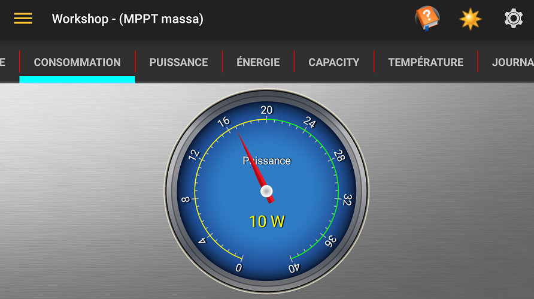Les cadrant de la consommation affiche la quantité d'énergie consommée par le système, cela est calculé à partir de la puissance générée moins la puissance d'entrer dans les batteries.
Puissance
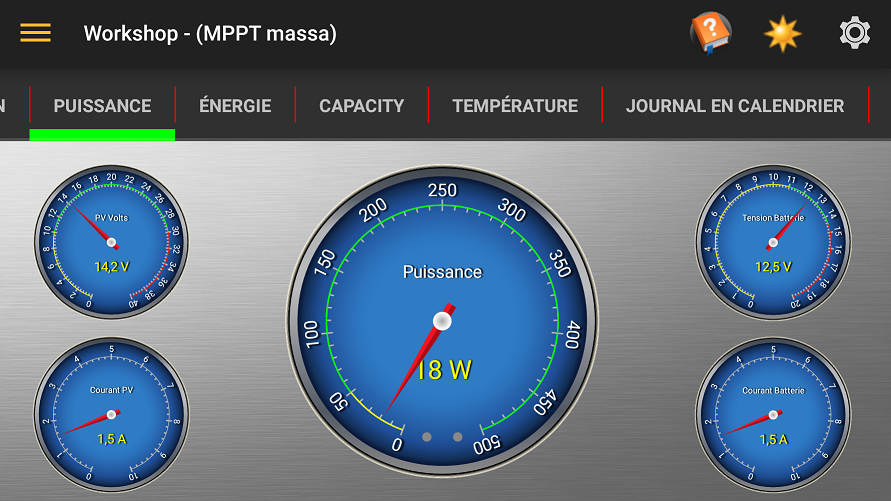L'onglet Puissance affiche la tension et le courant alimentant le contrôleur des panneaux solaires et de la tension et le courant en laissant le contrôleur pour les batterie et la lecture de puissance résultante pour le contrôleur sélectionné.
Le cadrant de puissance principal comprennent DEL près du bas du cadrant. La DEL de gauche est Aux 1 et la DEL de droite est Aux 2.
Energie
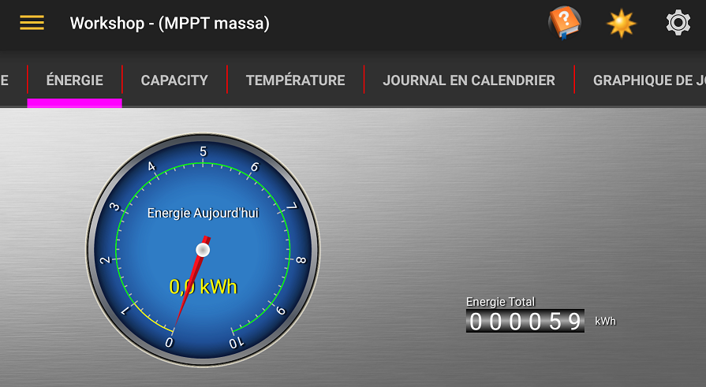L'onglet de l'énergie affiche la quantité d'énergie récolté aujourd'hui par le contrôleur sélectionné et le montant totale de l'énergie récoltée par le contrôleur depuis qu'il a été mis en service.
Lorsque vous avez plus d'un contrôleur et un WhizbangJr, un bouton radio est affichée pour vous permettre à voir l'énergie récoltée par le contrôleur ou le système (somme de tous les contrôleurs).
Capacité
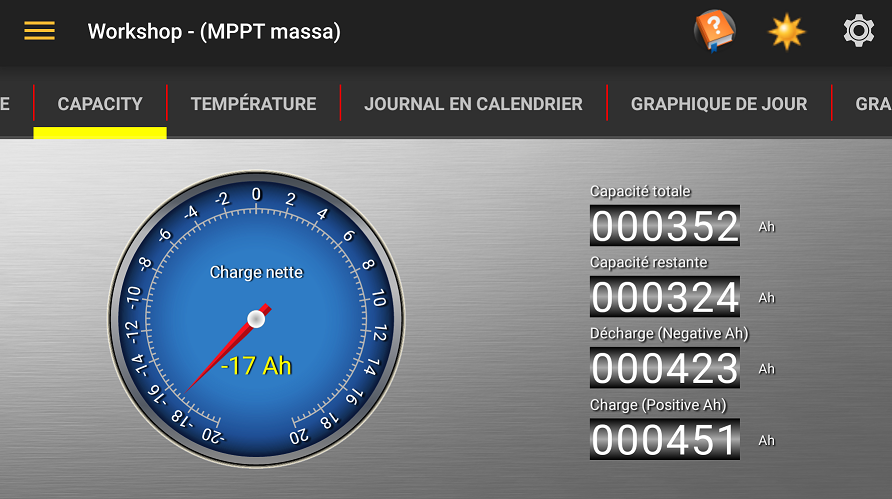L'onglet des capacités affiche le solde de l'énergie dans ampères / heure restant dans vos batteries.
Veuillez référer à la documentation Midnite Solar WhizbangJr pour plus d'informations.
Graphique Actuelle

Le graphique en direct affiche le volts de la batterie (rouge), le courant d'alimentation (jaune) et un état de l'indicateur de charge. Si un WhizbangJr est détecté, le tableau affiche également la charge de la batterie / courant de décharge (cyan).
L'état de charge (ligne au bas du tableau) affichage comme suit;
- Indéfini: Blanc
- Repos: Noir (code 0)
- Absorber: Orange (code 3)
- BulkMPPT: Vert (code 4)
- Flotte: Bleu (code 5)
- FlotteMPPT: Cyan (code 6)
- Égaliser: Rose (code 7)
- HyperVOC: Rouge (code 10)
- EQMPPT: Violet (code 18)
Température
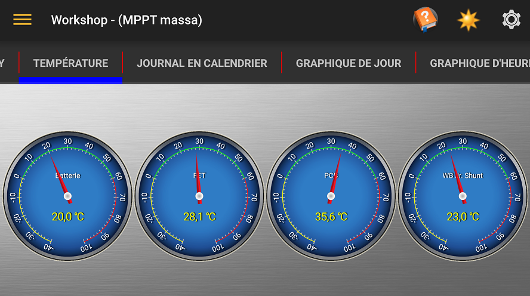L'onglet de la température affiche la température en degrés Celsius ou Fahrenheit de la batterie, FET interne et PCB et, si vous avez un WhizbangJr, la temprature du shunt.
Graphique Quotidien
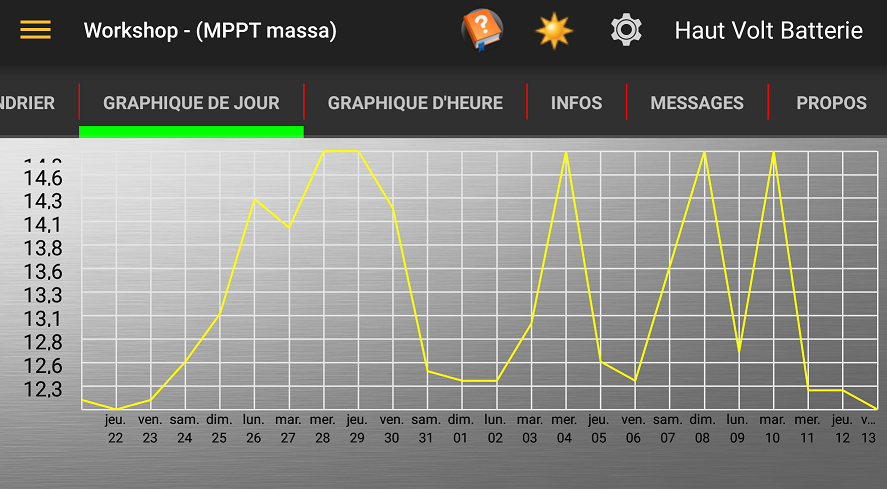Le Journal Quotidien affiche les informations enregistrées par le contrôleur pour les jour du mois, un menu est en haut à droite de la barre d'action vous permet de sélectionner la valeur tracée.
Graphique Horaire
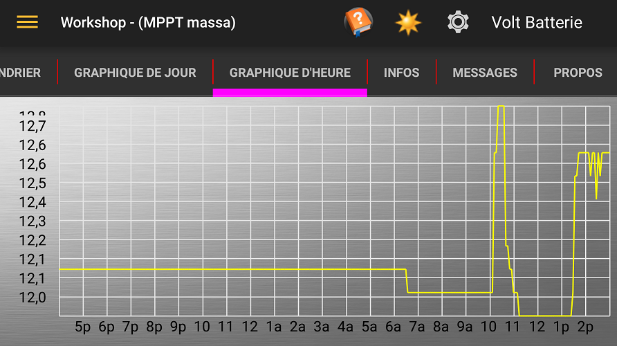Le Journal Horaire affiche les informations enregistrées par le contrôleur pour la journée en cours, un menu est en haut à droite de la barre d'action vous permet de sélectionner la valeur tracée.
Journal en Calendrier
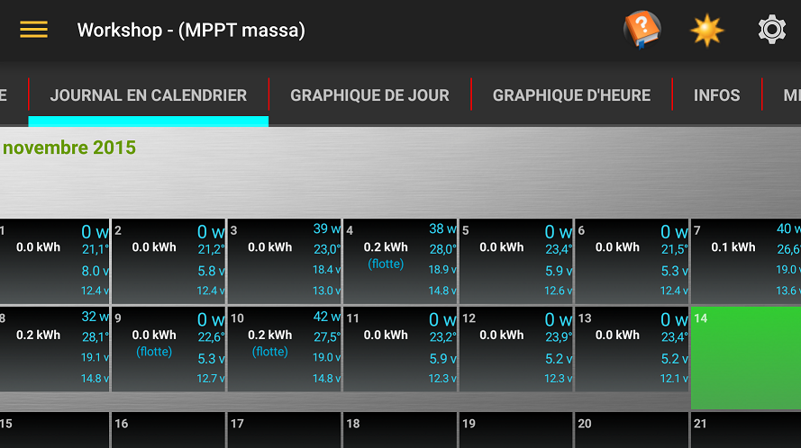Le Calendrier affiche l'énergie récoltée pour chaque jour du mois avec le PV max, tensions de batterie, la température et la puissance max pour la journée.
Les jours où le système atteint flotte ou égalise sont indiqués avec "(flotte)" et (égalisation).
Si le calendrier ne montre pas entièrement sur votre écran, vous pouvez faire défiler sa position en faisant glisser la partie noire du calendrier.
Les mois précédents peuvent être vue en glissant la partie grise du calendrier haut ou le bas.
Informations
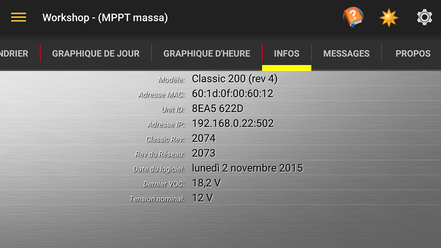L'onglet Informations affiche les informations de fabricantion de votre appareil avec la dernière valeur de POV de la photovoltaïque.
Messages
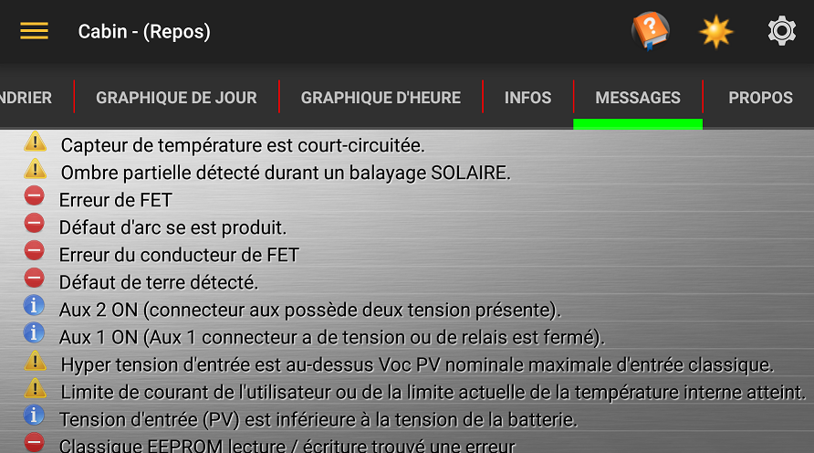L'onglet Messages affiche les informations d'avertissement et les messages d'erreur de votre contrôleur indiqué par une icône au début du message.